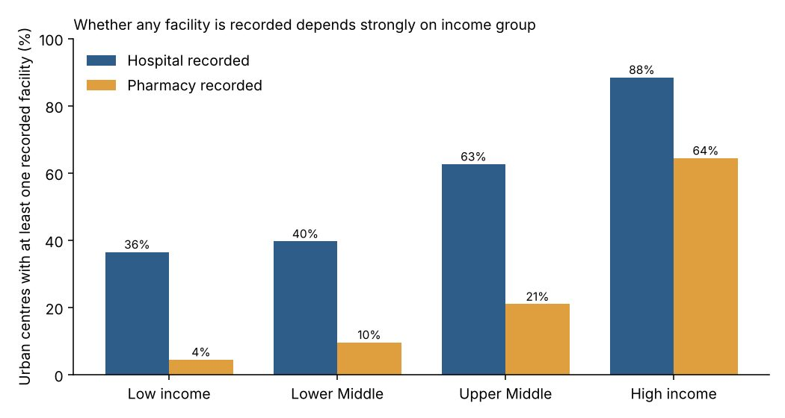
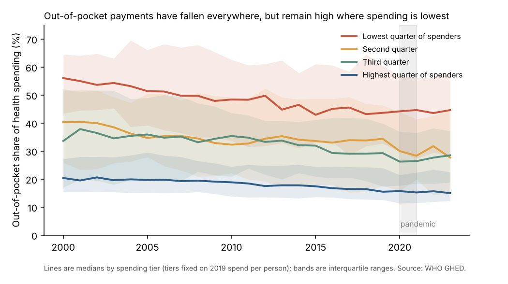

Work you can open, run and check
Thirteen projects across health data science, medical imaging, machine learning, SQL, BI, simulation, NLP, AI evaluation and fraud analytics. Ten run live in your browser, and the skills map below shows which project demonstrates which skill.
Emergency Department Simulator
A week of emergency department arrivals simulated minute by minute, with triage priority, a fast-track stream and ward-bed blocking.
Change doctors, beds and demand; watch waits and trolleys react
SQL Health Data Playground
Write SQL against the urban health and health financing databases, with challenges that check your answer against a reference query.
5 graded challenges, including window functions and a data-quality check
Fraud Ring Detector
Graph analytics on a synthetic account network with planted abuse rings and innocent families who share a device.
Tune the threshold and watch precision and recall trade off
AI Answer Evaluation Lab
Eight sample answers covering hallucinated sources, unsafe advice, over-refusal and broken code, scored on accuracy, safety and helpfulness.
Cohen's kappa against reference labels, by criterion
Clinical Text De-identifier
A rule and dictionary NLP pipeline for names, dates, Irish PPSN and Eircodes, phones and emails, with tag, surrogate and highlight modes.
Precision and recall on labelled notes, including where rules fail
Health Access BI Dashboard
KPI cards and measures over the real urban health dataset, with region, income and city-size slicers and a drill-down table.
Slicers, cross-filtering charts and country drill-down

Stomach Cancer Survival
Kaplan-Meier, log-rank and a multivariable Cox model written from scratch and verified on simulated data, on 443 patients.
Stage IV HR 5.2 · recurrence not predictable (AUC about 0.5)

Brain MRI Leakage Audit
Classical features with SVM, Random Forest and Logistic Regression on 3,264 MRIs, plus an audit of the public train/test split.
66% of the official test set had a twin in training

Urban Health Access
SQL preparation, nonparametric tests with effect sizes, logistic regression with bootstrap intervals and an interactive dashboard.
Hospital recorded in 88% of high-income vs 36% of low-income centres

Who Pays for Health Care?
SQL-first pipeline over WHO and World Bank data with bootstrap intervals, clustering and an Ireland vs EU27 view.
Out-of-pocket share falls as compulsory financing rises (rho -0.84)
Pneumonia from Chest X-rays
Rebuilds the public split by patient before training, then reports AUROC, sensitivity and specificity with patient-level intervals.
Patient-disjoint split, Grad-CAM checks, bootstrap CIs
Knee Osteoarthritis Grading
Fine-tunes ResNet-50 and tests whether GLCM texture features add anything on top of CNN embeddings.
CNN vs texture features vs fused, scored by weighted kappa
ERBB2 Breast Cancer Expression
Compares ERBB2-amplified with non-amplified breast tumours using RNA-seq, copy-number and clinical data.
DESeq2, pathway enrichment and penalised Cox in R
Which project proves which skill
Every skill on my CV links to at least one project you can open. Scroll sideways on a phone.
| Skill | Emergency Department | SQL Health | Fraud Ring | AI Answer | Clinical Text | Health Access | Stomach Cancer | Brain MRI | Urban Health | Who Pays | Pneumonia from | Knee Osteoarthritis | ERBB2 Breast |
|---|---|---|---|---|---|---|---|---|---|---|---|---|---|
| Python | |||||||||||||
| SQL | |||||||||||||
| R | |||||||||||||
| JavaScript and web | |||||||||||||
| Statistics and inference | |||||||||||||
| Survival analysis | |||||||||||||
| Machine learning | |||||||||||||
| Deep learning and imaging | |||||||||||||
| NLP and text | |||||||||||||
| LLM and AI evaluation | |||||||||||||
| Data quality and leakage audits | |||||||||||||
| BI and dashboards | |||||||||||||
| Simulation and operations | |||||||||||||
| Graph and anomaly detection | |||||||||||||
| Privacy and GDPR | |||||||||||||
| Trust and Safety | |||||||||||||
| Genomics |